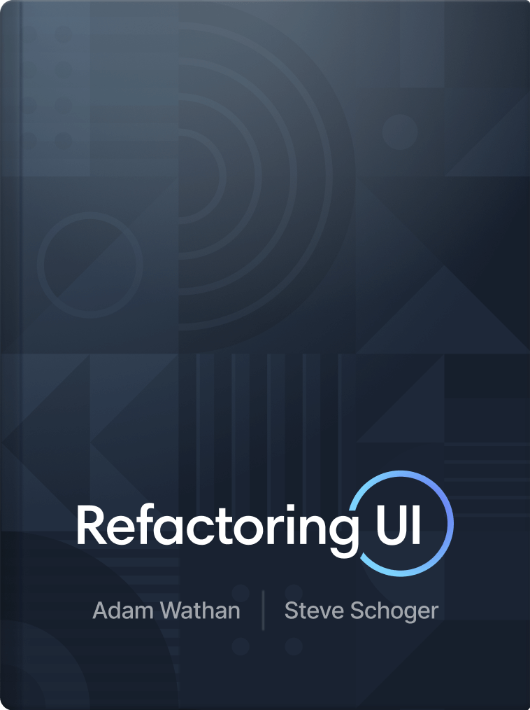

QUESTA SETTIMANA HO SALVATO
Refactoring UI di Wathan & Schoger.
→
refactoringui.com
Manuale pratico sulle decisioni di design quotidiane — gerarchia, contrasto, layout, spaziatura, tipografia. Niente teoria, solo principi applicabili la sera stessa. Scritto da chi ha disegnato Tailwind, pensato per chi conosce il codice meglio del Bauhaus. Volume principale di riferimento sulla mia scrivania.
